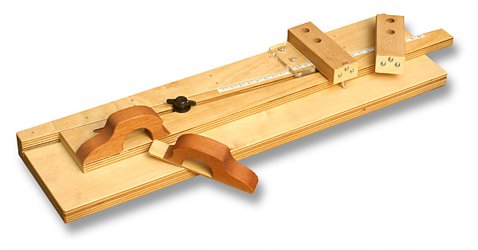
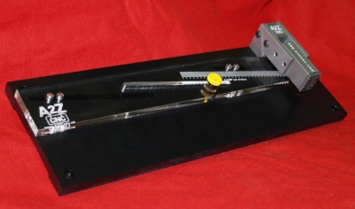

|
Dan McLeod used to hand craft this elegant balsa stripper from birch plywood and mahogany. By sliding the forward diagonal plate with the mahogany handle, then relocking it with the star knob, different cutting widths can be easily set with great accuracy. The second mahogany handle is fitted to a thin plywood plate, the underside of which has a piece of sandpaper, making a nifty push block for sliding your balsa stock through the blade. The tip of the blade is anchored in a small brass tube for stability while cutting firm stock. Teflon tape on the base minimizes the friction as you make a cut. The second blade holder is beveled to incline the blade 15 degrees for cutting planking strips. This precision balsa stripper is beautifully made, and a treasured addition to my tool collection. The bad news is that Dan has stopped making them. Tim Goldstein updated the design while he owned Peck Polymers and A2ZCNC, and offered the updated version shown below. Crafted from CNC-machined aluminum, acrylic and UHMW, it is extremely precise and can be easily set to within 1/128-inch. A bench hook is a welcome addition to this version, holding the stripper securely to the edge of your workbench. It can also be permanently mounted to your bench or a clamping board. | |
| Unfortunately, Tim has ceased production as well. If you ever see one of these at a swap meet, grab it while you can! It also wouldn't take too much to replicate the concept at home with a few basic tools. You could calibrate the scale with careful measuring. A cheap pair of calipers or dial indicator would be more than precise enough if you have them available. |

|
| While a lot of nice work can be done with lesser tools, it takes craftsmanship and care to accomplish the goal. Top shelf tools such as this balsa stripper go a long way to making the journey more pleasant. | |
Copyright 2006-2020, Thayer Syme. All rights reserved